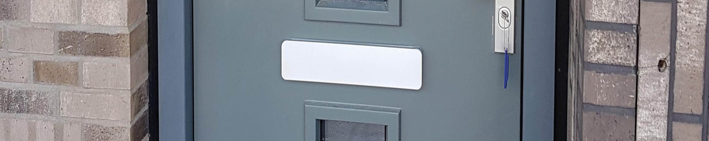

Kierdichting
Tocht in huis is niet comfortabel en het voelt koud aan. Extra stoken helpt niet echt. Naden en kieren dichtmaken met simpele oplossingen helpt wel. Naden en kieren kun je zelf goed dicht maken.
De kosten daarvoor vallen enorm mee. Hierdoor zijn de kosten, voor het materiaal, snel terug te verdienen. In een gemiddelde tussenwoning bespaar je door naden en kieren te dichten circa 70 m3 gas per jaar.
Naden en kieren bevinden zich op veel plekken in de woning, o.a.:
Rondom kozijnen, ramen en deuren
Onderzijde vensterbanken
Draaiende deuren en ramen
Brievenbusklep
Aansluiting van delen van het dak
Leidingdoorvoeren (meterkast)
Bij het kruipluik
Tussen gipsplaten
Wilt u de tocht in uw huis aanpakken? Loop alle bovenstaande punten langs en maak een lijstje met problemen en benodigdheden om deze op te lossen. Op onze WoonWijzerWebshop zijn diverse materialen en oplossingen te vinden om zelf de naden en kieren dicht te maken.
Ventilatie
Het verbeteren van de naad- en kierdichting is een vrij kleine oplossing waarmee je een hoop energie kunt besparen. Bij het verbeteren van de kierdichting moet er wel nagedacht worden bij de ventilatie.Het is belangrijk onderscheid te maken tussen gewenste toetreding lucht (ventilatie) en ongewenste toetreding lucht (infiltratie). Voldoende verversing van frisse lucht is cruciaal voor de gezondheid van de bewoners, maar ook om vochtproblemen in huis te voorkomen. Op de pagina over ventilatie is veel informatie te vinden over het reguleren van de gewenste toetreding frisse lucht.
Vergelijk meer producten
Dakisolatie
Platdakisolatie IKO EnerthermGeluid
Binnenwandsysteem HV70 Van FaayEco-Baffles Van VRK
Geluidisolatie Isolgomma Van Imbema
Gevel
BuitenisolatiegevelHoutvezelisolatie Van Gutex
Isolatie Isovlas PL Plaat
Spouwisolatie HR++ Neopixels EPS Parels
Glas
Glasfolie van HomechillHR++ Isolatieglas
Renovatieglas en Kozijnen
Vloer
Bodem afsluiting KalkkorrelsReflectiefolie Tonzon